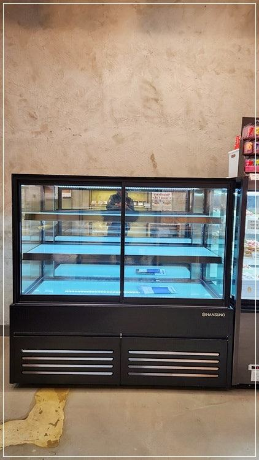
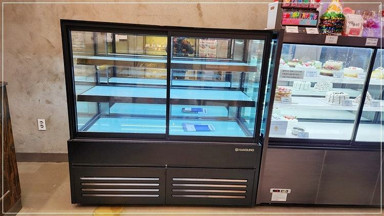
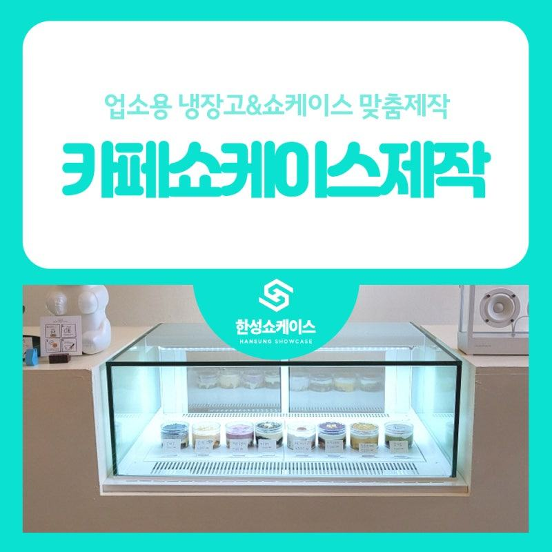
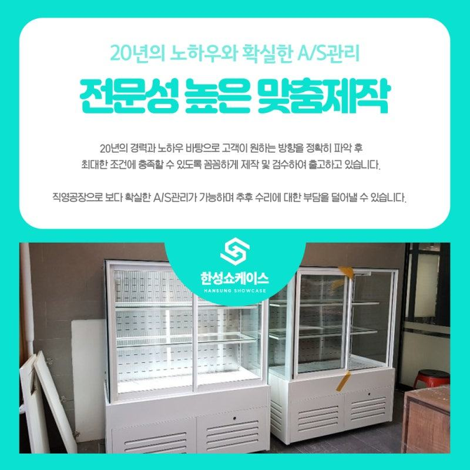
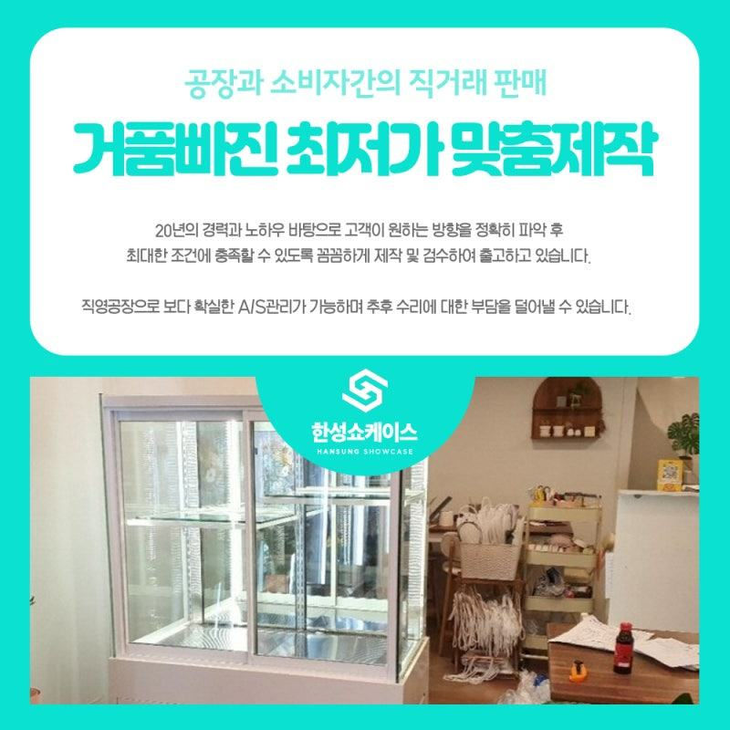
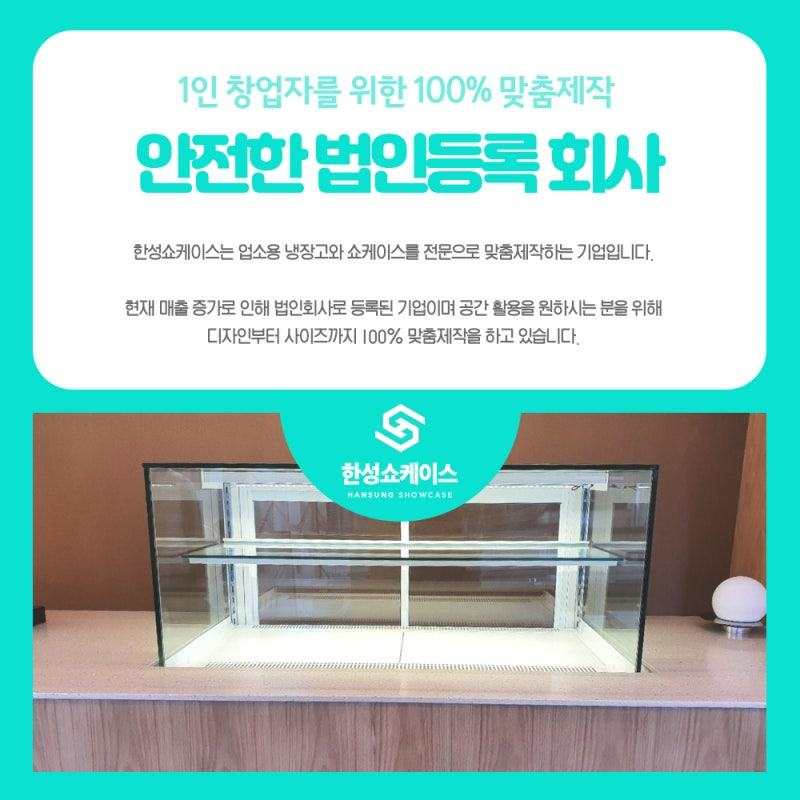

제과쇼케이스
제과쇼케이스 디자인, 베이커리 인테리어와 맞추는 유리·색·마감

제과쇼케이스 디자인은 유리 형태와 문 방향을 먼저 정하고, 그다음 프레임 색·상판 마감·조명 톤을 매장 인테리어에 맞추는 순서로 고르시면 됩니다. 케이크 위주인지 구움과자 위주인지에 따라 어울리는 형태가 달라지니 진열 메뉴를 기준으로 시작하세요.
안녕하세요. 카페와 베이커리 매장에 맞춘 제과쇼케이스를 디자인부터 제작까지 맡고 있는 한성쇼케이스입니다.
요즘은 빵만 파는 빵집보다 커피와 디저트를 함께 내는 카페 겸 베이커리가 많아졌습니다. 이런 매장은 쇼케이스가 카운터의 얼굴 역할을 하다 보니, 조금만 어긋나도 공들인 인테리어 전체가 어색해 보이죠.
제과쇼케이스는 한 번 들이면 한자리에서 오래 쓰는 장비라 디자인을 고칠 기회가 거의 없습니다. 그래서 처음 고를 때 매장 콘셉트와 진열할 디저트를 함께 놓고 결정하는 것이 중요합니다.
오늘은 제과쇼케이스 디자인을 정할 때 유리, 문, 색과 마감, 조명 순서로 살펴볼 점을 정리해 드리겠습니다.
1. 곡면 유리와 사각 유리
앞면 유리가 둥글게 휘어진 곡면형은 부드럽고 클래식한 인상을 줍니다. 케이크 단면이나 홀케이크를 위에서 내려다보듯 보여 주기 좋아서 전통적인 제과점이나 따뜻한 톤의 매장에 잘 어울립니다.
각진 사각 유리는 군더더기 없는 직선이 특징이라 모던하고 미니멀한 카페와 잘 맞습니다. 유리 모서리가 깔끔하게 맞물려 있어 디저트를 하나의 작품처럼 보여 주기 좋고, 카운터 라인과 높이를 맞추면 공간이 한결 정돈돼 보입니다.
- 매장 가구 선이 곡선 위주인지 직선 위주인지 보세요.
- 주력 디저트를 어느 각도에서 보여 줄지 정하세요.
2. 앞문형과 뒷문형, 동선이 정합니다
직원이 카운터 안쪽에서 디저트를 꺼내 드리는 매장이라면 뒷문형이 기본입니다. 손님 쪽 유리는 막힘없이 깔끔하게 보이고, 작업은 뒤에서 이루어지니 동선이 엉키지 않습니다.
손님이 직접 꺼내 가는 셀프 방식이거나 쇼케이스를 벽에 붙여 두는 구조라면 앞문형이 맞습니다. 앞문형은 손잡이와 경첩이 정면에 보이기 때문에 손잡이 모양과 색까지 인테리어와 맞춰 고르시는 게 좋습니다.


3. 프레임 색과 상판·하부 마감
화이트 프레임은 밝고 깨끗한 인상을 주고 디저트 색을 화사하게 띄워 줍니다. 블랙이나 다크 그레이는 초콜릿 케이크나 타르트처럼 진한 색 디저트를 고급스럽게 보이게 하고, 실버나 스텐 마감은 위생적이고 단정한 느낌을 냅니다.
쇼케이스 하부는 카운터 가구와 같은 우드나 타일로 감싸 하나의 가구처럼 보이게 하는 방법도 많이 씁니다.
이때 기계실 통풍구 위치를 미리 정해 두지 않으면 마감 후 열이 빠지지 않는 문제가 생기니 인테리어 업체와 꼭 공유해 주세요.
- 인테리어 자재 샘플이나 시안을 상담 때 보여 주세요.
- 하부 마감을 감쌀 경우 통풍구 위치를 먼저 정하세요.
4. 조명 톤과 단 구성
조명은 디저트가 맛있어 보이느냐를 가르는 마지막 단계입니다. 생크림과 과일이 올라간 케이크는 너무 차가운 백색 조명에서 푸르게 보일 수 있어, 주백색처럼 따뜻한 기운이 있는 조명을 많이 고르십니다.
단 구성도 디자인의 일부입니다. 홀케이크 높이에 맞춘 넉넉한 칸과 마카롱, 쿠키를 올리는 낮은 칸을 함께 두면 진열이 리듬감 있게 보이고 손님 시선도 자연스럽게 아래위로 움직입니다.
체크리스트
- 곡면 유리·사각 유리 선택
- 앞문형·뒷문형과 직원 동선
- 프레임 색과 주력 디저트 색
- 하부 마감과 통풍구 위치
- 조명 색 톤
- 디저트 높이에 맞춘 단 구성
현장에서 자주 보는 경우: 기성품 쇼케이스가 카페 겸 베이커리 인테리어를 깨는 매장
개인 카페에서 베이커리 메뉴를 함께 내기 시작하면서 쇼케이스를 급하게 기성품으로 들이는 경우가 있습니다.
공들여 꾸민 매장인데 쇼케이스만 획일적인 디자인과 크기로 들어가 공간과 어울리지 않고, 결국 다시 상담을 받으러 오시죠.
베이커리쇼케이스는 한자리에서 오래 쓰는 대형 장비라 디자인과 사이즈를 처음부터 공간에 맞추는 것이 중요합니다.
직접 운영하는 제조 공장에서 매장 공간을 중심으로 디자인과 크기를 정해 제작하고, 오래 쓰다 보면 필요해지는 A/S까지 이어서 맡습니다.
그동안 납품한 여러 디자인은 홈페이지에서 미리 보실 수 있습니다.





자주 묻는 질문
인테리어 공사 전에 쇼케이스 디자인을 정해야 하나요?
카운터 높이와 하부 마감, 전기 위치가 쇼케이스와 맞물리기 때문에 인테리어 도면 단계에서 함께 정하시는 게 좋습니다.
나중에 맞추면 마감을 다시 해야 하는 경우가 생깁니다.
작은 미니 제과쇼케이스도 디자인을 바꿀 수 있나요?
작은 제품도 상담 후 크기, 색상, 조명을 맞춰 제작합니다. 매장 사진과 진열할 디저트 종류를 알려 주시면 어울리는 구성을 제안해 드립니다.
디자인 샘플을 직접 볼 수 있나요?
공장에 방문하시면 여러 샘플을 직접 보실 수 있고, 홈페이지에서도 납품 사례를 확인하실 수 있습니다.
방문 일정은 대표전화 031-986-2458로 잡아 주세요.
매장 조건에 맞춰 만드는 한성쇼케이스
원하시는 제품 사진과 설치할 공간 사진만 보내 주셔도 매장에 맞는 구성을 추천해 드립니다.
- 전국 240여 개 A/S 전담 센터 운영
- 본사 대량 자재 매입으로 품질 대비 합리적인 가격
- 유럽제·삼성 냉각 콤프레셔 적용
- 국내 최초 쇼케이스 전문 디자이너 상주
매장 폭과 원하는 진열 구성을 알려 주세요. 실측과 견적을 안내해 드립니다.
031-986-2458